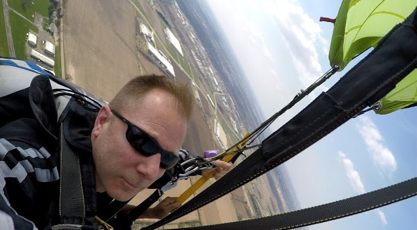

So you’re thinking about jumping out of a plane, but is it safe? While nothing in the world is totally without risk, the short answer is YES, skydiving is safe! Looking at the most current data, skydiving in the 2020s is safer than it has ever been in human history.
Skydiving has evolved from a "daredevil" stunt into a highly regulated, technology-driven aviation sport. While no extreme activity is without risk, the numbers show that the "danger" of skydiving is largely a myth of the past.
Howy Hensen is a veteran skydiver and instructor with over 35 years and 6,000 jumps. Howy comes from a competitive skydiving background. He played a foundational role in organized competitive skydiving in the Illinois and Wisconsin area in the 1990’s. He completed his competitive career by participating in a 300 person skydiving formation in 2002. This was a world record at the time.
The Midwest Skydiving League (MWSL): Howy was the first director of the MWSL (formerly the Illinois Skydiving League) starting in the late 1990s.
Competitive Career: He was a formation skydiving competitor who competed for 5 years at the USPA Nationals, medaling 1 time each in the 4-way FS intermediate class and advanced class. He also medaled 1 time in the intermediate 8-way FS class. He completed his competitive skydiving career in 2002 by participating in a 300 person skydiving formation. This was a world record at the time.
Professional Background: Outside of the skydiving world, he has been involved in the fitness industry as a personal trainer and a CrossFit gym owner. He also worked for 22 years as a firefighter in the city of Milwaukee.

In the world of skydiving, safety isn’t just about high-tech gadgets—it’s about the culture created by the people who lead the sport. Few people embody this transition from "daredevil hobby" to "disciplined aviation sport" better than Howy “Freefall” Hensen.
When you jump with a veteran like Howy, you aren't just relying on a parachute; you are relying on thousands of successful deployments, rigorous gear maintenance that meets the highest FAA standards, and the mentorship of a coach who has trained the next generation of safety-conscious flyers.
We use only the highest-quality rigs, canopies, and reserve parachutes. Every student receives a full safety briefing, harness fitting, and exit training before boarding the aircraft.
| Item | Standard |
|---|---|
| Tandem Rig | Student + Instructor dual system |
| Reserve Parachute | Cypres 2 AAD (automatic activation) |
| Helmet & Altimeter | Standard on every jump (for AFF/Students) |
| Video/Photo | Optional professional capture |
Still have concerns? Our veteran instructors are happy to answer any question before you jump. Feel free to reach out!
262-642-9494